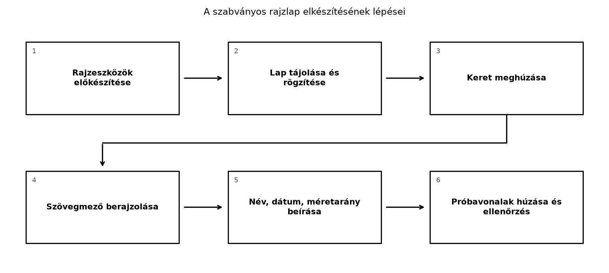
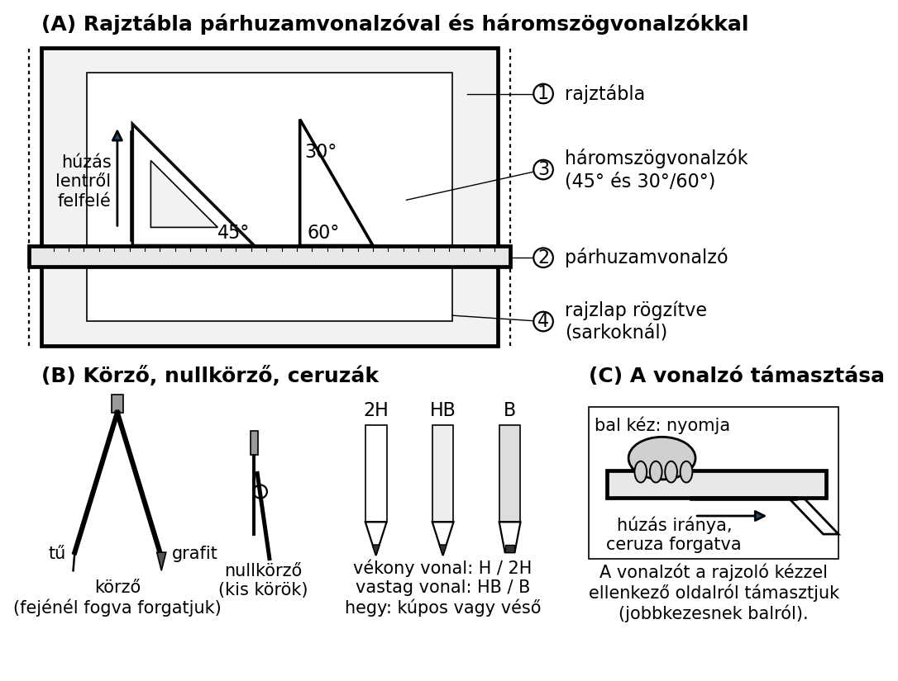

Egy asztalosműhelyben a megrendelő egy beépített szekrényt kér. A tanuló felméri a helyszínt, és ceruzával vázlatot készít. A műhelyben a kolléga ebből a vázlatból akarja kivágni a bútorlapot, de nem tudja, melyik vonal látható él, melyik takart él, és hol vannak a tengelyek. A bizonytalan rajz miatt rossz helyre fúr, a lap selejt lesz, és a vevő vár. A hiba oka nem a méretben van, hanem abban, hogy a rajz nem a szabványos vonalakkal készült. A faipari szakrajz ezért nem „szép rajzolás”, hanem a műhely közös nyelve: ha mindenki ugyanazt a vonalfajtát, rajzlapot és feliratot használja, a rajz egyértelmű utasítássá válik.
Képzelj el egy egyszerű fa polcot, amelynek elölnézetét rajzoljuk meg. A polc oldallapjának látható körvonala folytonos vastag vonal. A hátlap mögötti csavar helyét, amely elölről nem látható, szaggatott vonal jelzi. A polc közepén húzódó furat tengelye pontvonal. Ha ezt a három vonalat felcseréljük, a munkatárs félreérti a rajzot, és mást gyárt. A következő ábra a gyakorló rajzlap készítésének lépéseit mutatja, amelyet ebben az alfejezetben tanulsz meg.

Definíció. A faipari szakrajz olyan műszaki rajz, amely egy faipari terméket, alkatrészt vagy szerkezetet méretekkel, anyagjelölésekkel és szabványos ábrázolási jelekkel úgy mutat be, hogy abból a termék egyértelműen legyártható, összeállítható vagy ellenőrizhető.
A szakrajz szerepe a gyártásban:
A szakrajzot mindig szabványos előírások szerint készítjük. A legfontosabb szabványcsaládok: az ISO 128 (műszaki rajzok általános alapelvei), az ISO 5457 (rajzlapméretek és elrendezés), valamint az ISO 3098 (szabványírás). A pontos magyar jelölés MSZ EN ISO 128, MSZ EN ISO 5457, illetve MSZ EN ISO 3098 lehet; a számokat mindig ellenőrizendő a hatályos szabványjegyzékben.
A faiparban többféle rajzot használunk. Ebben az alfejezetben csak röviden, később a A faipari rajzok fajtái: formaterv, csomóponti, összeállítási, alkatrész- és műhelyrajz alfejezetben részletesen foglalkozunk velük.
| Rajzfajta | Mit mutat meg? | Mikor használjuk? |
|---|---|---|
| Formaterv | A termék megjelenését, arányait, hangulatát | Megrendelői egyeztetés, ajánlat |
| Alkatrészrajz | Egyetlen alkatrészt méretekkel, anyaggal | Gyártás, szabásjegyzék |
| Összeállítási rajz | Az alkatrészek egymáshoz illesztését | Szerelés, kötések |
| Műhelyrajz | Részletes, a műhelyben gyártáshoz elég információ | Gyártás |
| Csomóponti rajz | Egy szerkezeti részletet nagyítva | Kötés, vasalat, élzárás |
| Vázlatrajz | Gyors, kézi, nem feltétlenül méretarányos, de arányos | Helyszíni felmérés, ötlet |
A szakrajz alapjait mindegyik rajzfajta használja, ezért először a rajzeszközöket, a rajzlapot, a vonalakat és a feliratokat tanuljuk meg.
A hagyományos kézi rajzoláshoz az alábbi eszközökre van szükség. A gyakorlatban egyre több a számítógéppel készített (CAD) rajz, de a kézi rajzolás alapjai a szakmai gondolkodást és a rajzolvasást is fejlesztik.
Szabály. A rajzeszközöket tisztán, szárazon kell tartani. A vonalzó élét nem szabad megkarcolni, a körzőt nem szabad leejteni. A ceruzát használat után hegyezzük ki, és a radírt ne érje olajos kéz.

A műszaki rajzok szabványos lapméreteken készülnek. Az A-sorozat alaplapja az A0, amelynek területe 1 m². A kisebb lapokat az előző lap felezésével kapjuk.
| Lapjel | Méret (mm) | Jellemző használat |
|---|---|---|
| A0 | 841 × 1189 | Nagy összeállítási rajzok, tervek |
| A1 | 594 × 841 | Nagyobb termékek |
| A2 | 420 × 594 | Közepes termékek |
| A3 | 297 × 420 | Műhelyrajzok, alkatrészrajzok |
| A4 | 210 × 297 | Gyakorló rajz, vizsgarajz, dokumentum |
A faipari oktatásban és a vizsgán leggyakrabban A4-es és A3-as lapot használunk.
Szabvány. A rajzlapon keretet kell húzni. A keret vonala folytonos vastag vonal. A bal oldali margó szélesebb, mert a lapot fűzésre, irattartóba tűzésre használják. A szabványos távolságok: bal oldalon 20 mm, a többi oldalon 10 mm. (Ellenőrizendő: MSZ EN ISO 5457 szerinti pontos értékek.) Egyes iskolai sablonok 5 mm-t használnak; mindig az intézményi sablon szerint dolgozz.
A keret jobb alsó sarkában helyezkedik el a szövegmező. A szövegmező tartalmazza a rajz legfontosabb adatait:
Az iskolai gyakorlatban gyakran egyszerűsített szövegmezőt használnak, amely legalább 180 mm széles és 27 mm magas, de a pontos méret a szabványtól és az intézményi sablontól függ. (Ellenőrizendő: ISO 7200 szerinti szövegmező méretei.)
Az A4-es álló rajzlap elrendezését és a vonalfajták mintáját az ábra mutatja. A keret a bal oldalon 20 mm-re, a többi oldalon az MSZ EN ISO 5457 szerint 10 mm-re van a lap szélétől (ellenőrizendő; iskolai sablonon 5 mm is előfordul). Az interaktív változatban A4/A3, álló/fekvő lap és a keretkonvenció választható, a rajzmező mérete kiszámolódik.
A rajz egyértelműsége a vonalfajták helyes használatán múlik. A faipari szakrajzon a következő vonalfajtákat használjuk:
| Vonal neve | Jelölés | Vastagság | Alkalmazás |
|---|---|---|---|
| Folytonos vastag | vastag, folytonos | 0,5–0,7 mm | Látható élek, körvonalak |
| Folytonos vékony | vékony, folytonos | 0,25–0,35 mm | Méretvonal, segédvonal, anyagjelölés |
| Szaggatott | vékony, rövid vonalakból | 0,35–0,5 mm | Takart, nem látható élek |
| Pontvonal (vékony láncvonal) | vékony, hosszú vonal–pont | 0,25–0,35 mm | Tengelyvonal, szimmetriatengely |
| Vastag pontvonal | vastag, hosszú vonal–pont (a végeken és irányváltásnál vastag) | 0,5–0,7 mm | Metszősík nyoma, különleges jelölés |
| Szabadkézi vonal | vékony, szabadkézi hullámvonal | 0,25–0,35 mm | Törésvonal, szakítási határ |
A vonalvastagságok egymáshoz viszonyított aránya fontos. A szabványos vastagságsor (mm-ben): 0,13; 0,18; 0,25; 0,35; 0,5; 0,7; 1,0; 1,4; 2,0. A gyakorlatban a vékony vonal 0,25 vagy 0,35 mm, a vastag vonal 0,5 vagy 0,7 mm. (Ellenőrizendő: ISO 128-20 vonalvastagság-sor.)
Szabály. A rajzon belül a vonalvastagságokat következetesen kell alkalmazni: az azonos típusú vonalak azonos vastagságúak legyenek. A látható élek vastag vonala és a méretvonalak vékony vonala vizuálisan is jól elkülönüljön.
Figyelem. A takart él szaggatott vonala mindig rövidebb szakaszokból áll, mint a tengelyvonal pontvonala. A szaggatott vonal elemei egyenletesen, szabályos közökkel követik egymást. A pontvonal hosszú vonalakból és köztük rövid pontszerű jelekből áll.
Továbbvitt eredmény. A szabványos vonalfajtákat és a rajzlap keretét minden későbbi szakrajzi alfejezet használja, először a Méretarány és méretmegadás a faipari rajzon alfejezetben. A méretvonalak, segédvonalak, anyagjelölések és metszetjelölések csak akkor lesznek egyértelműek, ha ezt az alapot pontosan ismered.
A rajzon szereplő feliratoknak, méreteknek, anyagjelöléseknek jól olvashatónak és egységesnek kell lenniük. A szabványírás olyan betűforma és betűméret, amelyet a műszaki rajzokon kötelezően alkalmaznak.
A betűk lehetnek:
A betűmagasságok szabványos sorozata milliméterben: 1,8; 2,5; 3,5; 5; 7; 10; 14; 20. A rajzfeliratoknál leggyakrabban 3,5 mm és 5 mm betűmagasságot használunk. A betűvonal vastagsága a betűmagasság körülbelül egytizede, tehát 5 mm-es betűhöz 0,5 mm-es vonalvastagság illik. (Ellenőrizendő: ISO 3098 szerinti betűméret-sor és arányok.)
Szabály. A rajzon minden feliratot szabványírással, lehetőleg sablonnal vagy számítógéppel készítsünk. A kézi írásnál a betűket egyenletesen, döntés nélkül vagy egységes dőléssel írjuk. A számoknak és a mértékegységeknek is szabványos alakjuk legyen.
A következő eljárás egy A4-es gyakorló rajzlap elkészítését mutatja be. A cél a keret, a szövegmező és a vonalfajták gyakorlása.
Recept. Gyakorló rajzlap készítése:
A rajzlapon a keret által határolt területet rajzmezőnek nevezzük. A rajzmező méretét a lapméretekből és a kerettávolságokból számítjuk ki.
Számítás. A4-es álló lap szélessége 210 mm. A bal oldali margó 20 mm, a jobb oldali 10 mm. Mennyi a rajzmező szélessége?
Számítás. A3-as álló lap magassága 420 mm. A felső és alsó margó egyaránt 10 mm. Mennyi a rajzmező magassága?
Ellenőrzés: a rajzmező mindig kisebb, mint a lap, és a különbség a kerettávolságok összege. A4-esnél a szélességi csökkenés 30 mm, A3-asnál a magassági csökkenés 20 mm, ami megfelel az elvárásnak.
A gyakorló rajzlapot a következő szempontok szerint ellenőrizzük:
| Ellenőrzési pont | Módszer | Elfogadható érték |
|---|---|---|
| Keret távolsága az élektől | Vonalzóval mérve | bal 20 mm, többi 10 mm, tűrés ±1 mm |
| Szövegmező mérete | Vonalzóval mérve | 180 mm × 27 mm (vagy az intézményi sablon szerint) |
| Vonalvastagság | Szemrevételezés | vastag 0,5–0,7 mm, vékony 0,25–0,35 mm |
| Vonalak folytonossága | Szemrevételezés | nincs megszakítás, nincs dupla vonal |
| Feliratok | Szemrevételezés | szabványírás, olvasható, 3,5 mm |
| Tisztaság | Szemrevételezés | nincs elkenődés, radírmaradék |
Ha eltérést látunk, javítjuk: a rossz vonalat kiradírozzuk, és a megfelelő vonallal újrarajzoljuk. A keret és a szövegmező méretét utoljára is ellenőrizzük.
Egy asztalos tanuló a műhelyben egy ajtólapot készített. A rajzon a zsanérhelyeket pontvonal jelölte, mert a zsanérok takartak. A kolléga azonban a pontvonalat tengelyvonalnak nézte, és nem fúrt zsanérhelyeket. Az ajtólap összeszerelésénél derült ki, hogy hiányoznak a fészkek, ezért a lapot újra kellett venni. A hiba oka az volt, hogy a tanuló nem használta a szabványos szaggatott vonalat a takart zsanérhely jelölésére, hanem pontvonalat. A valós eset tanulsága: a vonalfajták nem díszítő elemek, hanem utasítások. A gyártásban minden vonalnak pontos jelentése van, és a félreértés anyag- és időveszteséget okoz.
A válaszok a Megoldások elején találhatók.
1. feladat (A) Sorold fel a faipari szakrajzon használt hat leggyakoribb vonalfajtát, és mindegyikhez írd oda, mire való.
2. feladat (A) Egy A4-es rajzlap szélessége 210 mm, magassága 297 mm. A bal margó 20 mm, a többi margó 10 mm. Számítsd ki a rajzmező szélességét és magasságát milliméterben.
3. feladat (B) Rajzolj le egy egyszerű fa polcot elölnézetben, amelynek a hátlapján két takart csavarlyuk van. A polc szélessége 400 mm, magassága 300 mm, a furatok a polc középvonalán, a szélektől 100 mm-re helyezkednek el. Írd le a rajz vonalait: mi vastag, mi vékony, hol van szaggatott és hol pontvonal.
4. feladat (B) Egy rajzlapon a keret bal oldali margója 15 mm, a jobb oldali 10 mm. A rajz A3-as, a lap szélessége 420 mm. Mennyi a rajzmező szélessége? Helyes-e a bal oldali margó? Indokold a választ a szabvány szerint.
5. feladat (C) Egy rajzon a következő vonalakat látod: a látható élek vékony vonallal rajzolva, a takart él pontvonallal, a tengelyvonal szaggatottal. Mi a hiba ezen a rajzon? Milyen javításokat végeznél, hogy a rajz szabványos legyen?
6. feladat (D) Készítsd el a gyakorló rajzlapot A4-es lapon a Recept szerint. Rajzold meg a keretet, a szövegmezőt, írd be a feliratokat, és húzz mintavonalakat minden vonalfajtából. Ezután ellenőrizd a Minőségellenőrzés táblázat szerint, és írd le, mit mértél.
1. feladat (A) - Folytonos vastag: látható élek, körvonalak. - Folytonos vékony: méretvonal, segédvonal, anyagjelölés. - Szaggatott: takart, nem látható élek. - Pontvonal (vékony láncvonal): tengelyvonal, szimmetriatengely. - Vastag pontvonal: metszősík nyoma, különleges jelölés. - Szabadkézi vonal: törésvonal, szakítási határ.
2. feladat (A) Rajzmező szélessége: . Rajzmező magassága: . Eredmény: a rajzmező 180 mm × 277 mm.
3. feladat (B) A polc elölnézetén a polc körvonala (szélesség 400 mm, magasság 300 mm) folytonos vastag vonal. A polc középvonalán (függőlegesen, a szélektől 200 mm-re) pontvonal húzódik, mint szimmetriatengely. A két csavarlyuk a polc felületén takart, ezért szaggatott vonallal jelöljük. A furatok a polc vízszintes középvonalán (az alsó éltől 150 mm-re), a bal, illetve a jobb széltől 100 mm-re vannak (a függőleges középvonaltól ±100 mm). Mindkét furatot szaggatott körrel rajzoljuk (takart), és mindkettő kap egy-egy vékony pontvonalas tengelykeresztet. A körvonal folytonos vastag, a méretvonalak folytonos vékonyak. A méretvonalak és segédvonalak folytonos vékony vonalak.
4. feladat (B) Rajzmező szélessége: (a szabványos 20 mm-es bal margóval lenne). A bal oldali margó 15 mm, ami kevesebb a szabványos 20 mm-nél, tehát nem helyes. A bal margónak 20 mm-nek kell lennie, hogy a lap fűzhető legyen. A rajzot javítani kell: a keretet bal oldalon 20 mm-re kell húzni.
5. feladat (C) Hibák: - A látható élek vékony vonallal vannak rajzolva; ez nem egyértelmű, mert a vékony vonal a méretvonalakhoz van rendelve. - A takart él pontvonal; ez félreérthető, mert pontvonal a tengelyt jelöli. - A tengelyvonal szaggatott; ez szintén hibás.
Javítás: a látható éleket folytonos vastag vonallal, a takart éleket szaggatott vonallal, a tengelyvonalat pontvonallal kell rajzolni. A méretvonalak maradjanak folytonos vékony vonalak.
6. feladat (D) A megoldás a Recept szerint elkészített rajzlap. Az ellenőrzésnél le kell mérni a keret távolságát (bal 20 mm, a többi 10 mm), a szövegmező méretét (180 mm × 27 mm), a vonalvastagságokat (vastag 0,5–0,7 mm, vékony 0,25–0,35 mm), és meg kell nézni a feliratokat. A leírásnak tartalmaznia kell a mért adatokat, például: „A bal margó 20 mm, a jobb 10 mm, a rajzmező szélessége 180 mm. A szövegmező 180 mm × 27 mm. A vastag vonal 0,5 mm-es ceruzával, a vékony 0,25 mm-es H-val készült. A feliratok 3,5 mm-es szabványírással készültek.”
A faipari szakrajz a műhely közös nyelve, amely egyértelmű utasítást ad a gyártáshoz. A rajzokat szabványos lapméreteken (A-sorozat), kerettel és szövegmezővel készítjük. Az A4-es lap 210 mm × 297 mm, a keret bal oldali margója 20 mm, a többi oldalon 10 mm, a szövegmező a jobb alsó sarokban van. A vonalfajták pontosan meghatározottak: a látható élek folytonos vastag, a méretvonalak folytonos vékony, a takart élek szaggatott, a tengelyvonalak pontvonal. A rajzfeliratokat szabványírással, általában 3,5 mm-es betűmagassággal készítjük. A rajzeszközöket tisztán, karbantartva kell tartani. Továbbvitt eredmény: a szabványos vonalfajtákat és a rajzlap elrendezését minden későbbi szakrajzi alfejezet használja, először a Méretarány és méretmegadás a faipari rajzon alfejezetben. A rajz csak akkor biztonságos gyártási dokumentum, ha a keret, a szövegmező és a vonalak szabványosak.